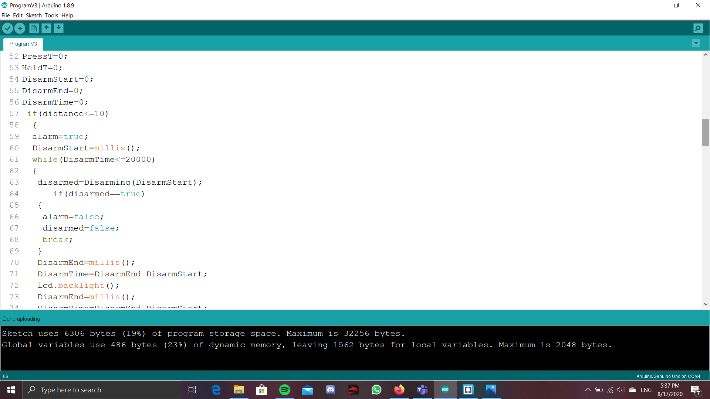
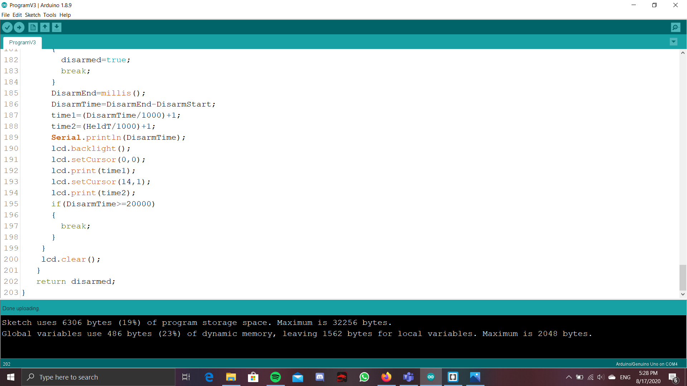
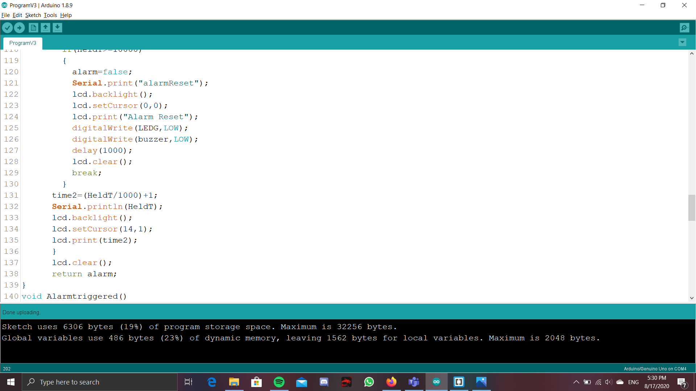

The requirement of the project can be found here:https://rdorville.github.io/EP1000/finalProject/Final%20Project.html.
Requirements
- CADD and/or Digital graphic components (vector/raster):
- 2D cutting and engraving: 2D printed part would be the box in which would house all of the components. For engraving, could be just the labels on the box itself of where the components would be.
- 3D printed part: Standoff/ mount for the arduino, so can be mounted on top of the breadboard
- Embedded control using a microcontroller with
–input(s):Ultrasonic sensor, switch
–output(s):LED light, LCD display and buzzer
Bill of materials
For the project, i plan to make a intruder door alarm, BUT, it will also take into account the possibility that there might also be other people living/working in the area, so i have made a feature where they can disarm the alarm when they walk in. It uses a ultrasonic sensor that senses if anyone has passed by the alarm, which ideally should be placed in a doorway, or a corridor. If someone does pass through the sensor, then they would have 20s to disarm the alarm, by holding the button at the back of the object for 5s. If the button is not pressed, then the buzzer, as well as the LED will go off, alerting the place that there is a intruder. In case it was a false alarm, or if someone just forgot to disarm the alarm, then once the alarm goes off, all you need to do is to hold the button at the back for 10s, then the LEDs and the Buzzer will deactivate, resetting the device. All of this will be powered by a battery, as it usually would need to be placed in a doorway or a entry overnight, there might not always be a laptop to power the alarm, so a battery in the alarm itself will make more sense, and just by removing the lid of the alarm, it will give easy access to the battery pack, so the batteries can easily be swapped out if they do run out.
General idea of how it works
Project journey
Actually a headsup, this part is going to be kind of wordy as i just wrote down the things i did during the journey of making the final prototyoe. SORRY!

This is the shell of the project. It is big enough to fit the breadboard + other electronics. It is also high enough so as to allow for a arduino board to be held by other 3D printed parts on top of the breadboard. However, as of now, there isnt any holes that would allow for output or input
This is just a general idea of how the electronics would look like, but it still does not work, And would need some tweaking
For my general idea, I am thinking of doing something like a intruder/burglar alarm. It will comprise of a Ultrasonic sensor as the input, while using a buzzer(which i can hopefully attain) and LEDs lights as the output. It works by having the a ultrasonic sensor sense an area. If the ultrasonic sensor gets a reading reading that is lower than usual, say 30cm or lower, it could mean that someone has crossed this area, and it could be an int ruder. This will cause the LEDs and buzzer that we hooked up to trigger, letting the user know that they have some unwanted guests. On top of this, If it was a false alarm, there would a switch in the circuit that the user could press, and that would reset the alarm.
It is 22nd of july 2020, and i have come up with a 'final' idea, as well as the parts that need to be printed and laser cut.

So for the shell of the project, the shell is the same as the one at the top of the page, except here, i have managed to add the cutouts to the sides of the box, that will allow for the inputs and outputs of the project to sit. At the fron of the box, there is a cutout for the things that send out the signals from the ultrasonic sensor, as well as the little pill shaped looking piece of metal from the ultrasonic sensor.This allows for the ultrasonic sensor to send the signals outside of the box and bounch off surfaces of the outside, instead of the signals bouncing off the inside of the box. The little engraving or words at the bottom right side of the right side of the box says "Press to trigger the alarm". I hoped that by doing this it would deter any intruders from touching the button as it is used to disarm the alarm. To achieve, i plan to have cut out the sides of the box, then engrave it on those. Below this engraving, is a cutout for the switch. You can also see there is a cutout at the side of that would allow for the arduino stand to sit/hang on. The arduino sides of the arduino stand is slotted into this 2 parts, and when all of the sides of the shell is placed together, the stand would not drop. Speaking of the arduino stand, it is the 3d printed part for this project and will be a way for the arduino board to be mounted on a different height from the rest of the parts, making it so that the box would not have to be too large. The arduino stand also has grooves that helps to keep the arduino in place, so that the arduino would not fall of the stand if the project is moved. The little slot at the top is a cutout that is used to place the LEDs so that the light from the alarm can be seen from outside. I did not create a cutout for the buzzer, as i think it would not be needed. Since the sound from the buzzer can still be heard, even with a cutout.
As of 24th of july, i managed to roughly program out the program for the project, just that i did not program in the function of a buzzer yet as i do not have that component yet. Other than that, the program works fine and i have even considered adding in a LCD display which could make it more user friendly when trying to disarm the alarm. For the program, It start by naming the pins to the apporiate ports of the arduino, so the LCD takes A4 and A5, and Switch buzzer and LEDS are placed at the ports 8, 7 and 11, and the Ultrasound sensor is placed in port 9 and 10 . After wards, it starts by to keep continousally keep the ultrasonic distance and read the distance detected. If the distance is above a certain threshold, then nothing would happen, since it means that noone has walked past the sensor. However, if it detects that someone DID walk pass the sensor, It will then bring the the alarm to the next part of the program, where it would give the person that walk pass up to 20s to disarm the alarm. If it is disarmed in this time, then it will reset, and nothing will happen. However, if it is NOT disarmed, then it woud bring the alarm to the next part of the program, where it will start to the the LED and the Buzzer to trigger. It can then be disarmed again here IF the button is pressed. The code will be greater explained below in the section called arduino code. In order to incoporate this LCD display, i have added a cutout at the top of the shell so that the pins would be on the inside of the shell, while the other parts would be sitting at the top of the shell
It is 12 midnight on 25th of july and i realized i had made a mistake with my previous shell design. So i have redesigned the shell, and although it looks very similar to the previous design, i have tweaked the placement of several cutouts so it would be easier to fit the electronics in later, as well as making it a little more user friendly.


This is the FINAL design of the laser cut shell of the project. I have added cutouts for the battery pack stand as i had not considered about the battery source before. So with this cutout, it will allow for the 3D printed stand for the battery pack to be placed in the shell, as well as the arduino stand from before.

I have updated the design of the arduino and battery stands since i am worried that there might not be enough clearance, and thus just increased the amount of clearance, so that the stand will be able to fit abit easier.
I have managed to laser cut out the sides of the shell, but there was a tinsy little hiccup when laser cutting, or more like afew tinsy little hiccups. First, was some weird scaling issues, where when placing the dxf file, i was not of the right side, but quickly tweaking some of the dimensions, that problem was resolved. Another issue when cutting was that the cutter would jump around, cutting 1 finger for 1 side, then going to cut another finger, instead of making it a continous cut. However, this problem only seemed to be for the cutter in T11, as when i went back to T14 to cut another side that was not able to fit into the original, there was not the problem of the laser jumping around, but instead, it made 1 continous cut. Lastly, another problem, but is what i would like to call a feature now, is when doing the engraving for 1 of the side, i had forgotten to remove the paper. This made it so that the engraving was not very deep, as it mostly only cut the paper. However, in the end, because this happened, i was able to peel away only 1 part of the engrave and COULD leave in the second part, making it so that there was some contrast, and turned out alot more pleasing to the eye in the end.
For the battery pack, it would require 4 AA batteries, and it would also require some souldering and to be placed into the arduino in the VCC and the GRD port. At first, the button was orginally planned to be connected with a male to female cable, but the pins on the button was too short, so i had to use souldering too to connect it to the breadboard. Lastly, the Buzzer would also need to be souldered, as the buzzer does not have the connections for a male to female cable, nor could it be placed directly into the breadboard.
For the arduino and battery stands, i have updated the design, as when i was testing around with the original design, the stands would easily slip out of their cutoff, so i had added some structures to prevent the arduino stands from falling out. I have also increased the height of the base, compared to that of the original as there was quite alot of space at the holes that holds the stand.
Now all that is left is piecing this entire thing together. I had the Laser cut parts and all of the electronics. Firstly, i had connected the electronics. Trigpin was connected to port 10 and the echopin was connected to port 9. The LED was connected to port 2, the switch was connected to port8 and the buzzer was connected to port 11. For the LCD display, the vcc and grd was connected directly into the arduino board and not the breadboard, as it would make the interior neater, since the cables did not need to travel so far. On top of that, there was still leftover GRD and 5V ports, so no problem there too. Now, onto the laser cut parts. Another problem that was encountered, was that the sides that was laser cut did not want to 'sit still', where they would keep falling apart, as if the fingers were not able to the hold the box together. At first, tape was used to hold them together, but as the dateline, and everything was finalising, arcylic glue was to hold these sides together, all except the top and the front. The top still needed to be easy to take off, since replacing that battery will be from there, and the front was left inglued was i was still able to tweak the code further.
Arduino Code
Here i will explain the code in much greater detail.
So it first start by naming which component and which pin will be connected to which port of the arduino. The Trigger of the ultrasonic sensor is port 10 and echo pin is connected to port 9. The LED is connected to port 2, the Switch is connected to 8 and the buzzer is connected to port 11.
Now starts the real part of the code. It first senses the distance of the Ultrasonic sensor. If it does fall below a certain threshold, the it would mean that someone has walked passed it.

This will start the big part of the code by setting the bool alarm to TRUE. It will also record down the time that the sensor was tripped, by using millis() and saving it to the value DisarmStart. Now comes a while loop, that checks if the 'trip' of the sensor has gone on for more than 20s, by checking the unsigned long DisarmTime has a value of 20000ms or more, which has first been set 0. So now it will go into the while loop as the DisarmTime is less than 20000.
Now, it will run a user defined function that basically checks if the button has been pressed, and for how long it has been pressed. It does this by first taking the time when the button is pressed and saving this to the value PressT. Then, if the button is still being pressed, it will continousoly be taking the timing and saving it to the value HoldT, and then subtract it with the timing of when the button is pressed, and this will be saved to the value HeldT. Now it goes into a if statement to check if the value HeldT, which is basically for how long the button has been pressed, and if the value is above 5000, which means that if the button has been pressed for more than 5s, then it will break this while loop, as well as set the bool disarmed to true. This is because in my testing, if the user does not notice that he has held for 5s, then it will still continue running this while loop. Therefore, the break was neccesary so that once the button has been held for 5s, the alarm will immediately disarm.

After this if statement, i added a feature so as to show how long the disarm window has been running for as well as how long the button has been pressed. This hopefully makes it more user friendly when they are trying to disarm where if the while(sw==high) loop has not been broken, it will also count how the the disarm window has been going on for, and then display how long the switch has been held and how long the alarm window has been going on for. Then was accomplised by having 2 intergers. After that, divide the value of heldT and DisarmTime by 1000 and add 1. This would turn the values of the HeldT and DisarmT into seconds and not milliseconds. Additionally, If the disarm window has been more than 20s, there will be a break. This is implemented, because after some testing, i found out that if the button is pressed afew seconds, before the disarm window, and is still pressed after the disarm window, then it will not say that there is an intruder, and actually still successfully disarm the alarm. So in order to deal with this, i have placed another if statement, that checks if the disarmTime is more than 20000, and if it is, then there will be a break, even if the button is still being pressed. After this user defined function, there will be a if statement that checks the bool disarmed if it is true. If it is, then alarm will be set to false, as well as disarmed set to false for when the program needs to be run again. After these bools are set, then a break is used to kick the program out of the while loop that checks for the disarmTime. This is because, if the button is already pressed for 5s, then there would be no need to continue the while loop. And now, if the while loop at checks the DisarmTime has not been broken yet, then DisarmEnd would be measured and then minused with the DisarmStart, to see for how long the Disarm window has gone on for.
Now out of the while loop, There is a if else statement that checks if the alarm is false or true. If it has already been disarmed during the while loop, then alarm should be false and the user function AlarmDisarmed would be run. It is a simple function that basically shows on the LCD display that the alarm has been disarmed. Else if, alarm is true, which means that the alarm has not been disarmed, then it wil run a while loop, that checks if alarm is true. While in this while loop, the user defined function, Alarmtriggered.
It basically sets the Buzzer and LED to HIGH, and makes the LCD display show INTRUDER! Then if goes into a if statement to check if the button is pressed. If it is pressed, it will run a user defined function, AlarmReset, where that just basically checks how long the button is pressed for.

It starts by taking the time when the button is first pressed, by using PressT=millis().Next, it runs a while loop that will run while the button is pressed. In keeps taking he timing of the button being held and saving it to HoldT, and compares it to the time the button was pressed, to see if the button has been pressed for 10s. This is done by minusing HoldT to PressT. Next is a if statement that checks if the button has been held for 10s. If it has, then it will set the alarm to false, as well as setting the buzzer and the lED to LOW, then printing on the screen "AlarmReset", then using break to get the user out of the while loop, since if the user keeps holding down the button, the while(sw==high) loop will keep going and the alarm will not fully reset. After this, the time for how long the button has been held will be shown on the LCD display, but using the same method of the disarming function. At the end of the function, it will return whether alarm is false or true. It will be true if the user has not held the button for 10 or more seconds, and false if the user did hold the button for 10 or more seconds. Now that alarm has been returned, there will be a if statement that checks whether alarm if true or false. If the alarm is true, then the while loop will continue to run, meaning that alarmTriggered and checking for the alarm reset will be repeated again, Or if alarm is false, then the while loop will be broken and the device will be sent back to detecting the doorway for anyone passing by.
Hardware(laser cutting or 3D printing)
Here, i will talk about the final print and design of the sides of the box, as well as the 3d printed parts.
For the laser cut parts, it is used to form the sides of the box, and basically work as an enclosure for the entire device.
As for the engraving, it will just be a simple engraving that spells my name at the back of one of the sides.
For the 3d printed parts, a stand was printed to make the arduino boards and battery pack to stay at a level above the breadboard. This makes it so that the entire system can be of a smaller footprints.
Video of how it works
At first i wanted to directly upload the video into github, and be able to assesed from the browser, but the fil was too big to be placed in github, so i had to upload the video into youtube. It can be assessced from the link: https://youtu.be/GPhMQoMibOw
This is poster for the project, and in case you are unable to access the poster, or would want your own copy, you can click Here
{kind=link}